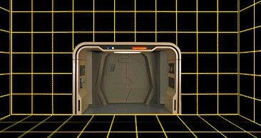
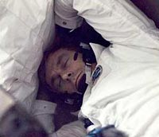
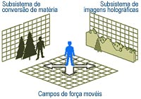
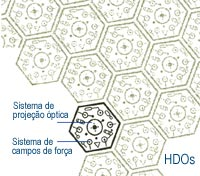
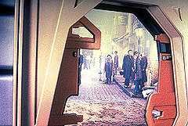

|
Simulador Hologrfico de Ambientes
(Holodeck)

por Tiago
Duarte
Desde o desenvolvimento do motor de dobra por Zefram Cochrane, em 2063, o tempo de durao dos vos interestelares por naves terrestres se tornou longo o suficiente para entediar os astronautas, mas curto o bastante para no justificar procedimentos de conservao criognica da tripulao. Nessas condies, distraes para os participantes de misses interestelares eram quesito mais do que obrigatrio.
 At antes do advento da dobra, entretenimento era uma necessidade: durante os primeiros vos orbitais na Terra e misses at a Lua, tripulantes ouviam fitas cassete com suas msicas favoritas, e controladores de vo periodicamente passavam verses resumidas dos jornais do dia. Documentao de estudo e gravaes de vdeo eram transmitidas para estaes orbitais e postos avanados planetrios at a primeira parte do sculo 21. Mas com as longas viagens dos primeiros cargueiros interestelares, a necessidade de diverso para manter a tripulao apta fsica e psicologicamente se tornou ainda mais.
O desejo de experimentar estmulos visuais, sonoros e tteis no normalmente encontrados numa nave espacial abateram pioneiros em toda a galxia por centenas de anos. Para as tripulaes humanas do sculo 22, o principal entretenimento ainda era a exibio de velhos filmes. Mas o contato com outras civilizaes demonstrou o quanto projees de imagens controladas por computador poderiam satisfazer de forma mais eficiente o desejo das tripulaes de espaonaves por ambientes estimulantes e, em adio a certos materiais esportivos e de recreao, prover uma agradvel recriao da realidade.
Vrias tcnicas acsticas e visuais foram aplicadas por cientistas da Terra e da Federao Unida de Planetas atravs dos anos, at que a segunda metade do sculo 23 abriu caminho para uma srie de avanos em campos de fora miniaturizados e dispositivos de projeo. Sem trazer grande impacto na massa da espaonave e seu volume, eles possibilitaram a criao de simulaes ultra-realistas e crticas para a operao da nave. A partir dos anos 2330, o sonho do Holodeck comeou a ganhar vida.
 O Holodeck utiliza dois subsistemas principais, o de imagens hologrficas e o de converso de matria. O sistema de imagens hologrficas cria ambientes e paisagens realistas. O sistema de converso de matria cria os objetos fsicos a partir dos suprimentos centrais de matria prima da nave. Em condies normais, um participante de uma simulao hologrfica no deve ser capaz de distinguir um objeto simulado de um real.
O Holodeck tambm gera impressionantes recriaes de humanides e outras formas de vida. Tais personagens animados so compostos de matria slida arranjada por replicadores baseados na tecnologia de transporte e so manipulados por raios tratores extremamente articulados, controlados por computador. Os resultados so "marionetes" excepcionalmente realistas, que demonstram comportamentos quase exatamente iguais queles exibidos por seres vivos, dependendo claro, dos limites do software envolvido. Replicao de matria baseada nos sistemas de transporte , obviamente, incapaz de reproduzir um ser vivo funcional.
Objetos criados no Holodeck que so puramente imagens no podem ser removidos do ambiente simulado, mesmo que paream possuir uma realidade fsica devido energia dos campos de fora. Objetos criados por replicao de matria possuem realidade fsica e podem, sim, ser removidos do Holodeck, lembrando apenas que no estaro mais sob o controle do computador uma vez retirados da simulao.
 O mecanismo bsico por traz do Holodeck o holo-diodo omnidirecional (HDO, ou OHD, na sigla em ingls). O HDO compreende dois tipos de dispositivos micro-miniaturizados que projetam uma variedade especial de campo de fora. A densidade de HDOs em uma superfcie hologrfica de 400 por cm e eles so alimentados por uma tomada de eletroplasma de mdia potncia. Paredes inteiras so cobertas por HDOs, manufaturados num processo barato de impresso de circuitos em rolo.
Uma superfcie de Holodeck tpica compreende doze camadas sub-processadas, totalizando 3,5 mm, fundidas a um difusor trmico-estrutural leve, que em mdia tem 3,04 cm de espessura. Os materiais primrios do sub-processador/emissor incluem keiro (keiyrium), animido de silcio e o supercondutor DiBe<2>Cu 732. Cada HDO individual mede 0,01 mm. O mecanismo da rede ptica digital atravs dos quais os HDOs recebem impulsos similar ao que alimenta painis display menores, embora as paredes grandes sejam divididas em sees, mais fceis de controlar e com velocidade maior, cada uma com 0,61 m. Sub-sees dedicadas do computador principal controlam esses "monitores" do tamanho de salas.
Alm da habilidade de projetar imagens coloridas estereoscpicas, os HDOs manipulam campos de fora em trs dimenses para possibilitar aos visitantes "sentir" objetos que na realidade no esto l. Este estmulo ttil fornece a resposta adequada que algum esperaria de uma rocha no cho ou uma rvore crescendo numa floresta. Os nicos fatores limitantes ao nmero e aos tipos de objeto apresentados pelo computador so memria e tempo para recuperar ou calcular do incio o padro de um objeto, seja ele real ou imaginrio.
Outros estmulos, tal como som, cheiro e gosto, so ou simulados por mtodos mais tradicionais, tais como caixas de som e pulverizadores, ou inseridos no objeto, utilizando as tcnicas de replicao.
A verso "tica" de um HDO emite uma imagem completa do ambiente ou paisagem, baseado em sua localizao em relao ao painel completo. O visitante, no entanto, v apenas uma pequena poro de cada um dos HDOs, quase que como um olho de mosca operando de maneira inversa. Quando o visitante se move, as pores visveis dos HDOs mudam, alterando a perspectiva. Em realidade, a energia emitida no como uma emisso eletromagntica visvel qualquer, mas sim padres de interferncia polarizados. A imagem reconstruda onde os padres se interceptam na lente ou olho de qualquer receptor visual.
A verso "campo de fora" cria um pequeno e dirigvel campo de fora. Os seus "primos" maiores so os familiares raio-trator e defletor de navegao. Sob o controle do computador, uma grande quantidade de HDOs produz um campo de fora com efeitos substanciais. Se o Holodeck, por exemplo, est criando uma grande pedra, o computador primeiro cria a superfcie tri-dimensional da rocha. Isso alcanado comandando certos HDOs para interceptar seus campos nas coordenadas do objeto. Se a intensidade do campo estiver ajustada para prover a dureza mineral adequada, o objeto vai parecer uma pedra ao toque. Uma grande biblioteca de substncias reais est disponvel, e ajustes padronizados podem ser solicitados por motivos experimentais.
Os campos de fora maleveis e as imagens de fundo permitem ao visitante experimentar volumes e distncias aparentemente maiores do que a sala do Holodeck poderia comportar fisicamente. O ambiente pode ser "rolado" se desejado, ou ajustado para ter limites, indicados por barreiras sensveis e lembretes auditivos da proximidade das paredes reais.
 Na USS Enterprise (NCC-1701-D), tripulantes podem visitar quatro Holodecks principais no deck 11. Adicionalmente, vinte salas menores e individuais com simuladores hologrficos esto situadas nos decks 12 e 33.
Num ambiente de trabalho tal qual uma nave da Federao, segurana de fundamental importncia e aplicada a todos os sistemas. Pelo ambiente de uma nave ser to controlado, o escape emocional associado a simulaes controladas de perigo real j foi demonstrado ter um grande impacto na manuteno do bem estar psicolgico da tripulao. Altas velocidades e foras so normalmente criadas por iluses sensoriais. Embora salva-guardas contra danos corporais estejam programadas no computador, alguns cenrios podem resultar em inevitveis arranhes e hematomas, mesmo para usurios com prtica. Perigos impostos por formas de vida "perigosas" podem parecer altamente reais e preencher a maior parte das expectativas.
Fonte: "Star Trek: The Next Generation - Technical Manual". Okuda, M.
|